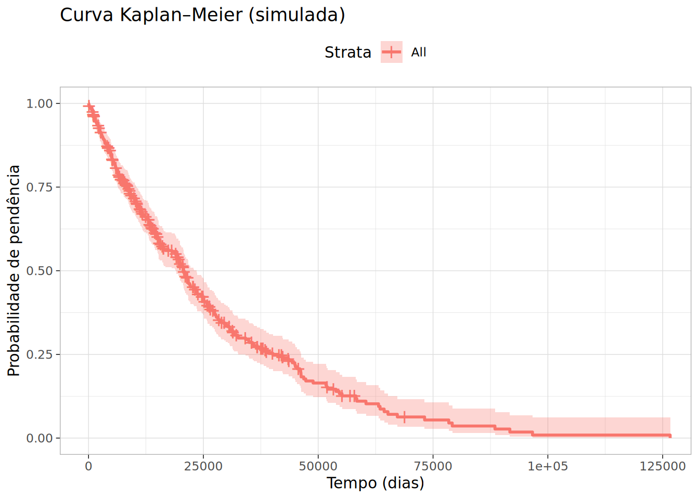
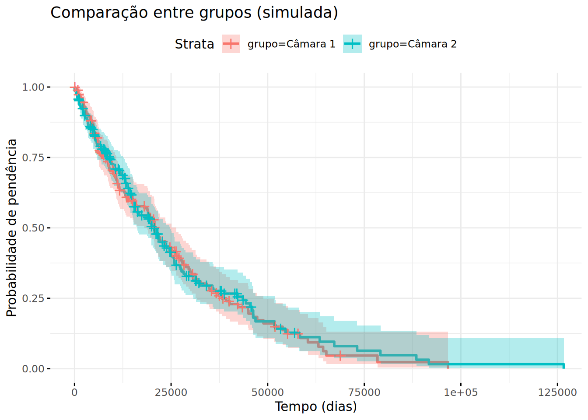

(n_i) = processos “em risco” imediatamente antes de (t_i)
Interpretável como:
probabilidade de pendência,
mediana de tempo,
comparação básica entre grupos.
14.6 Parte V — Figura 1: Curva Kaplan–Meier
Nesta seção, simulamos um conjunto de dados para demonstrar a curva de Kaplan–Meier.
Isso permite visualizar a probabilidade de pendência ao longo do tempo.
library(survival)library(survminer)
Loading required package: ggplot2
Loading required package: ggpubr
Attaching package: 'survminer'
The following object is masked from 'package:survival':
myeloma
Warning: Using `size` aesthetic for lines was deprecated in ggplot2 3.4.0.
ℹ Please use `linewidth` instead.
ℹ The deprecated feature was likely used in the ggpubr package.
Please report the issue at <https://github.com/kassambara/ggpubr/issues>.

14.7 Parte VI — Comparação entre grupos
A comparação entre curvas de sobrevivência é fundamental para entender diferenças estruturais entre:
varas,
câmaras,
classes processuais,
ritos,
tipos de processo,
processos físicos vs eletrônicos.
O método clássico utilizado é o teste log-rank, que compara as distribuições de sobrevivência considerando a censura.
Em seguida, simulamos dois grupos para ilustrar como essa análise funciona.
14.8 Parte VII — Figura 2: Comparação de grupos
A comparação entre curvas de sobrevivência é fundamental para identificar diferenças estruturais entre grupos de processos, como:
câmaras ou turmas julgadoras,
varas distintas,
processos físicos versus eletrônicos,
classes ou assuntos processuais.
A técnica usada é o Kaplan–Meier estratificado, acompanhada do teste log-rank, que avalia se as diferenças entre as curvas são estatisticamente significativas.
A seguir, simulamos dois grupos (“Câmara 1” e “Câmara 2”), ajustamos as curvas Kaplan–Meier e plotamos o resultado.
# Criando grupos simuladosset.seed(2)base$grupo <-ifelse(runif(n) >0.5, "Câmara 1", "Câmara 2")# Ajustando modelo Kaplan–Meier estratificadokm2 <-survfit(Surv(duracao, status) ~ grupo, data = base)# Plotando curvas dos dois gruposggsurvplot( km2,ggtheme =theme_minimal(),xlab ="Tempo (dias)",ylab ="Probabilidade de pendência",title ="Comparação entre grupos (simulada)",conf.int =TRUE)

Também executamos o teste log-rank, que verifica se as curvas são diferentes entre si:
survdiff(Surv(duracao, status) ~ grupo, data = base)
Call:
survdiff(formula = Surv(duracao, status) ~ grupo, data = base)
N Observed Expected (O-E)^2/E (O-E)^2/V
grupo=Câmara 1 188 135 133 0.0212 0.0413
grupo=Câmara 2 212 142 144 0.0197 0.0413
Chisq= 0 on 1 degrees of freedom, p= 0.8
14.8.1 Interpretação jurídica do teste log-rank
Um valor de χ² elevado indica maior diferença entre as curvas Kaplan–Meier comparadas.
Um p-valor pequeno (p < 0.05) sugere que os tempos de tramitação são estatisticamente diferentes entre os grupos analisados.
No contexto judicial, esse resultado pode revelar:
diferenças de desempenho entre câmaras julgadoras;
gargalos estruturais que afetam o tempo de decisão;
impacto de especialização, sobrecarga ou volume de casos;
desigualdades territoriais entre comarcas ou regiões.
Este tipo de comparação é especialmente útil para órgãos como CNJ, Corregedorias, Ministério Público, Defensoria Pública, AGU e procuradorias estaduais/municipais, pois permite identificar pontos críticos no fluxo processual e orientar intervenções estruturadas baseadas em evidências.
14.9 Parte VIII — Modelo de Cox (Riscos Proporcionais)
O modelo de riscos proporcionais de Cox é um dos métodos mais utilizados em análise de sobrevivência quando se deseja incluir covariáveis explicativas que influenciam o tempo até a decisão.
Ele permite responder perguntas como:
“Processos da Câmara 1 têm taxa maior de decisão do que os da Câmara 2?”
“Réu preso acelera a decisão?”
“Processos eletrônicos têm maior hazard?”
“Certas classes processuais demoram mais?”
O modelo não exige especificar a forma da função de risco de base, o que o torna flexível e adequado para fenômenos jurídicos.
14.9.1 Fórmula do modelo
O modelo é definido por:
\[
h(t; X) = h_0(t)\exp(X\beta)
\]
onde:
(h(t; X)): taxa de risco no tempo (t) dado o vetor de covariáveis (X),
(h_0(t)): risco de base (não parametrizado),
(X): efeitos multiplicativos das covariáveis,
(()): razão de riscos (hazard ratio).
14.9.2 Interpretação jurídica
(() > 1) → a variável aumenta a taxa de decisão (processos mais rápidos).
(() < 1) → a variável reduz a taxa de decisão (processos mais lentos).
Exemplo comum:
réu preso → hazard ratio > 1 (julga mais rápido);
execução fiscal → hazard ratio < 1 (demora mais).
O modelo é amplamente usado em estudos de produtividade judicial, eficiência processual e tempo até decisão.
14.9.3 Exemplo em R — Ajuste do modelo
A seguir, incluímos duas covariáveis simuladas:
x1: variável binária (ex.: réu preso vs solto),
x2: variável contínua (ex.: número de partes, valor da causa etc.).
# Criando covariáveis simuladasset.seed(3)base$x1 <-rbinom(n, 1, 0.4) # variável binária simuladabase$x2 <-rnorm(n, 10, 3) # variável contínua simulada# Ajuste do modelo de Coxcoxmod <-coxph(Surv(duracao, status) ~ x1 + x2, data = base)# Sumário do modelosummary(coxmod)
Call:
coxph(formula = Surv(duracao, status) ~ x1 + x2, data = base)
n= 400, number of events= 277
coef exp(coef) se(coef) z Pr(>|z|)
x1 -0.033526 0.967029 0.123036 -0.272 0.785
x2 -0.002896 0.997108 0.019705 -0.147 0.883
exp(coef) exp(-coef) lower .95 upper .95
x1 0.9670 1.034 0.7598 1.231
x2 0.9971 1.003 0.9593 1.036
Concordance= 0.501 (se = 0.02 )
Likelihood ratio test= 0.09 on 2 df, p=1
Wald test = 0.09 on 2 df, p=1
Score (logrank) test = 0.09 on 2 df, p=1
14.9.4 Como interpretar a saída
O resultado do modelo de Cox inclui os seguintes elementos fundamentais:
coef: valor estimado de ().
exp(coef): hazard ratio — o principal indicador interpretativo.
Pr(>|z|): p-valor do teste de significância da covariável.
Concordance: medida de qualidade preditiva do modelo (0.5 = aleatório; >0.7 = bom).
14.9.4.1 Exemplos de interpretação
Se exp(coef) para x1 = 1.40:
> “Processos do grupo x1 = 1 têm 40% maior taxa de decisão do que processos do grupo x1 = 0.”
Se exp(coef) para x2 = 0.92:
> “Cada unidade adicional em x2reduz a taxa de decisão em 8%.”
14.9.5 Observações importantes para pesquisas jurídicas
O modelo de Cox assume proporcionalidade dos riscos.
Este pressuposto deve ser testado com:
cox.zph(coxmod)
chisq df p
x1 0.797 1 0.37
x2 0.330 1 0.57
GLOBAL 1.129 2 0.57
14.10 Parte IX — Risco acumulado (Nelson–Aalen)
A função de risco acumulado (cumulative hazard) representa a soma da taxa instantânea de decisão ao longo do tempo.
Ela é definida por:
\[
H(t) = \int_0^t h(u)\,du
\]
Enquanto a curva de sobrevivência mostra a probabilidade de o processo continuar pendente, o risco acumulado mostra a intensidade acumulada de decisões ao longo do tempo.
O estimador mais usado é o Nelson–Aalen, adequado para dados censurados.
14.10.1 Por que o risco acumulado importa no direito?
O hazard acumulado é especialmente útil para:
avaliar períodos de maior atividade decisória;
comparar intensidade de julgamento entre câmaras, varas ou regiões;
identificar fases do processo com maior probabilidade de decisão (ex.: após conclusão, após parecer do MP, após sessão de julgamento);
entender comportamentos sazonais ou estruturais (ex.: impacto de mutirões);
analisar mudanças antes e depois de reformas processuais.
A leitura típica é:
curva subindo rápido → decisões concentradas;
curva subindo lentamente → baixa taxa de julgamento;
curva plana → período de inatividade decisória.
14.10.2 Figura — Risco acumulado (estimador Nelson–Aalen)
A seguir, calculamos o hazard acumulado usando o mesmo conjunto de dados simulado anteriormente:
A inclinação da curva mostra a intensidade de julgamento.
Uma curva mais inclinada indica períodos com maior taxa de decisões.
Mudanças abruptas na curva podem indicar eventos institucionais, como:
mutirões,
reformas procedimentais,
mudanças de competência,
alteração na composição da câmara ou vara.
Comparações entre curvas de diferentes grupos podem revelar:
gargalos,
desigualdades territoriais,
priorização de temas,
impacto de diferentes rotinas administrativas.
Curvas de hazard acumulado são complementares às curvas Kaplan–Meier:
KM → mostra o tempo de pendência.
Hazard acumulado → mostra a intensidade decisória ao longo do tempo.
14.10.4 Observação técnica
Em análises jurídicas aplicadas, o hazard acumulado é uma ferramenta poderosa para:
diagnósticos institucionais,
análises longitudinais,
estudos de impacto antes–depois,
auditorias de fluxo processual.
O método Nelson–Aalen é robusto, não exige suposições paramétricas e lida bem com censura.
14.11 Parte X — Introdução aos riscos concorrentes (Competing Risks)
Em muitos contextos jurídicos, um processo pode terminar de múltiplas maneiras mutuamente exclusivas.
Por exemplo:
Evento 1: sentença de mérito
Evento 2: extinção sem resolução de mérito
Evento 3: acordo homologado
Censura: processo ainda pendente
Quando diferentes tipos de eventos impedem o evento principal de ocorrer, estamos diante de riscos concorrentes (competing risks).
14.11.1 O erro mais comum: tratar risco concorrente como censura
Este é um dos erros metodológicos mais graves em pesquisas de jurimetria.
Se o processo é extinto sem mérito, ele não poderá mais receber sentença de mérito.
Logo, não se trata de censura, mas de um evento concorrente.
Se houver acordo, o processo também não poderá ter sentença de mérito.
Tratar esses eventos como censura:
superestima a probabilidade do evento principal,
gera curvas Kaplan–Meier distorcidas,
prejudica comparações entre grupos,
inviabiliza estimativas confiáveis de tempo.
14.11.2 Quando usar competing risks?
Use modelos de riscos concorrentes quando:
há múltiplas formas de resolução do processo;
um evento impede o outro de ocorrer;
eventos são excludentes.
Exemplos jurídicos típicos:
ação civil pública → acordo homologado vs sentença;
execução fiscal → prescrição vs pagamento espontâneo vs extinção;
processo criminal → acordo de não persecução penal vs sentença;
habeas corpus → perda de objeto vs julgamento de mérito;
ações previdenciárias → acordo vs procedência vs improcedência.
14.11.3 Consequências jurídicas de ignorar riscos concorrentes
Ignorar competing risks pode levar a:
conclusões erradas sobre duração processual,
diagnósticos incorretos de produtividade,
estimativas enviesadas sobre prescrição,
comparações injustas entre varas/câmaras,
análises contrafactuais inconsistentes.
É um problema especialmente frequente em:
relatórios judiciais,
trabalhos acadêmicos,
estudos empíricos sem acompanhamento estatístico especializado.
14.11.4 Métodos adequados
Quando há riscos concorrentes, substituir Kaplan–Meier por:
14.11.4.1CIF — Cumulative Incidence Function
A CIF estima a probabilidade acumulada de cada tipo de evento ocorrer.
14.11.4.2Modelo de Fine–Gray
Permite:
incluir covariáveis,
modelar cada risco concorrente separadamente,
comparar grupos com rigor estatístico.
14.11.5 Representação gráfica típica
Enquanto a KM mostra uma curva única de sobrevivência, a CIF mostra:
uma curva para o evento principal,
uma curva para o evento concorrente,
ambas reduzindo a sobrevivência.
Isso reflete mais adequadamente o fenômeno jurídico.
14.11.6 Intuição jurídica
Pense assim:
KM responde:
“Qual a probabilidade do processo continuar pendente ao longo do tempo?”
CIF responde:
“Qual a probabilidade do processo terminar desta forma específica ao longo do tempo?”
Essa diferença é decisiva em análises sobre:
prescrição,
extinções,
acordos,
perda de objeto,
tipos de sentença.
14.11.7 Conclusão da Parte X
Riscos concorrentes são a regra, não a exceção, nos dados judiciais.
Ignorá-los distorce conclusões e compromete decisões estratégicas, institucionais e acadêmicas.
As seções seguintes mostram como estimar corretamente a CIF e como visualizar esses resultados.
14.12 Parte XI — Função de Incidência Cumulativa (CIF) para riscos concorrentes
Quando há múltiplos eventos possíveis e mutuamente excludentes, como:
sentença de mérito,
extinção sem resolução de mérito,
acordo homologado,
prescrição,
não podemos usar Kaplan–Meier para estimar a probabilidade de cada tipo de desfecho.
Nesses casos, o método correto é a Função de Incidência Cumulativa (CIF).
14.12.1 O que a CIF estima?
A CIF — Cumulative Incidence Function estima a probabilidade acumulada de cada tipo específico de evento ocorrer ao longo do tempo.
Em termos simples:
CIF do evento 1 → probabilidade de sentença de mérito até o tempo (t).
CIF do evento 2 → probabilidade de extinção até o tempo (t).
CIF do evento 3 → probabilidade de acordo até o tempo (t).
Ela responde:
“Qual é a probabilidade do processo terminar desta forma específica até o tempo t?”
Enquanto a KM não consegue separar os tipos de eventos, a CIF consegue.
14.12.2 Interpretação jurídica
A CIF permite:
analisar competição entre modos de encerramento,
medir risco de extinção sem mérito,
identificar padrões de acordos ao longo do tempo,
avaliar risco de perda de objeto (comum em habeas corpus),
estimar probabilidade de prescrição intercorrente em execuções.
É a abordagem estatística correta para praticamente todas as análises de encerramento processual.
Uma curva CIF mais alta indica maior proporção acumulada daquele desfecho.
Se a CIF do grupo A sobe mais rapidamente para sentenças, então o grupo A julga mais rapidamente.
Se a CIF do grupo B sobe mais rapidamente para extinções, o grupo B extingue mais processos.
As CIFs permitem compreender prioridades administrativas, padrões decisórios e comportamentos específicos de cada órgão julgador.
14.12.5 Comparação jurídica entre grupos
A CIF responde perguntas que Kaplan–Meier não consegue responder, como:
“Qual câmara extingue mais processos sem mérito?”
“Qual vara tem maior probabilidade de acordo ao longo do tempo?”
“Há desigualdade territorial na probabilidade de julgamento?”
“Qual grupo apresenta maior risco de prescrição intercorrente?”
Essas interpretações são fundamentais para diagnósticos institucionais e análises de políticas públicas.
14.12.6 Quando usar Fine–Gray (modelos com covariáveis)
Para incluir covariáveis em contexto de riscos concorrentes, o método adequado é o modelo de Fine–Gray, que modela o subdistribution hazard.
Esse modelo permite:
comparar grupos ajustando por covariáveis,
controlar por classe, vara, rito, réu preso etc.,
obter hazard ratios específicos para cada tipo de risco.
Com Fine–Gray, é possível fazer análises mais completas e comparações justas entre unidades judiciais.
14.12.7 Conclusão da Parte XI
A CIF é uma ferramenta indispensável para análises jurídicas realistas porque:
separa e quantifica cada forma de encerramento processual,
evita as distorções do estimador Kaplan–Meier,
melhora a precisão de diagnósticos institucionais,
previne interpretações equivocadas sobre produtividade,
permite inferências mais sólidas sobre risco temporal,
prepara o terreno para modelagens mais avançadas como Fine–Gray.
Seu uso adequado é decisivo para uma jurimetria confiável e metodologicamente rigorosa.
14.13 Parte XII — Interpretação jurídica aplicada
A análise de sobrevivência, o risco acumulado e os métodos de riscos concorrentes ganham significado real quando interpretados à luz do funcionamento do sistema de justiça.
Esta seção mostra como essas ferramentas estatísticas revelam padrões concretos do comportamento processual.
14.13.1 Exemplos reais aplicáveis
Os métodos apresentados permitem responder questões como:
Habeas corpus:
Qual câmara julga HCs com maior rapidez?
Há diferença entre turmas criminais?
Há maior risco de perda de objeto em determinados períodos?
Varas da Fazenda Pública:
Processos levam significativamente mais tempo?
Há varas que concentram maior volume de extinções sem mérito?
Execuções fiscais:
Qual é a probabilidade acumulada de prescrição intercorrente?
Qual é o risco concorrente de pagamento espontâneo?
Processos eletrônicos (PJe) vs físicos:
A mudança tecnológica reduziu tempos de tramitação?
Em que momentos a diferença é maior?
Comparações territoriais:
Comarcas do interior são mais lentas que as da capital?
Há desigualdades regionais na probabilidade de julgamento?
14.13.2 Observações jurídicas importantes
14.13.2.1 Sobrevivência não é probabilidade de vitória
A curva Kaplan–Meier mostra a probabilidade de pendência, e não o resultado final do processo.
14.13.2.2 Hazard não é probabilidade direta
O hazard é uma taxa instantânea de decisão, não uma probabilidade bruta.
Um hazard alto em dado período indica maior ritmo decisório naquele intervalo.
KM → probabilidade de o processo continuar pendente.
Hazard acumulado → intensidade decisória.
CIF → probabilidade acumulada de cada tipo específico de encerramento.
Somadas, fornecem uma visão completa da dinâmica processual.
14.13.3 Exemplos de interpretações estratégicas
Se a CIF de extinções sobe mais rápido que a de sentenças, isso pode indicar:
priorização administrativa por extinção,
problemas de admissibilidade,
falhas documentais,
litigância predatória.
Se uma vara tem hazard acumulado muito baixo, pode indicar:
falta de estrutura,
alto volume de casos,
problemas procedimentais.
Se a KM de um grupo não cai por muito tempo (“curva alta”), indica:
lentidão estrutural,
baixo ritmo decisório,
filas de trabalho represadas.
14.13.4 Aplicações institucionais
Os métodos desta aula são usados por:
CNJ para monitoramento de produtividade;
Corregedorias para identificar gargalos;
MP e DPE para priorização de casos urgentes;
AGU e procuradorias para estimar:
tempo até sentença,
risco de prescrição,
custo jurídico previsível;
Tribunais para embasar mutirões, redistribuições e políticas de gestão.
14.13.5 Conclusão da Parte XII
Interpretar corretamente curvas de KM, hazard acumulado e CIF permite:
compreender o funcionamento real do Judiciário,
diagnosticar problemas com precisão estatística,
orientar decisões estratégicas,
reduzir ineficiências,
indicar reformas processuais necessárias.
A análise de sobrevivência não é apenas estatística:
é uma lente para entender a justiça como fenômeno temporal e institucional.
14.14 Parte XIII — Erros metodológicos comuns em análises de duração no direito
A análise de sobrevivência aplicada ao Judiciário exige cuidados específicos.
Erros metodológicos são frequentes em estudos, relatórios técnicos e até publicações acadêmicas.
Nesta seção, listamos os principais problemas e explicamos suas consequências.
14.14.1 Usar apenas processos decididos (complete case)
Este é o erro mais frequente.
Excluir processos pendentes viola o pressuposto de que dados censurados devem ser mantidos na análise.
Isso produz:
superestimação do tempo (muitas vezes em 20%–40%),
distorção na mediana,
viés na comparação entre varas e câmaras,
inferências equivocadas sobre produtividade.
Em execuções fiscais, por exemplo, excluir pendentes pode mascarar risco de prescrição.
14.14.2 Tratar riscos concorrentes como censura
Quando há extinção, acordo ou perda de objeto, o evento principal não pode mais ocorrer.
Classificar esses eventos como censura leva a:
curvas KM artificialmente altas,
probabilidade de julgamento superestimada,
erros graves em diagnósticos institucionais,
interpretações injustas de desempenho entre grupos.
O método correto nesses casos é CIF (e Fine–Gray para modelagem).
14.14.3 Misturar eventos diferentes no mesmo desfecho
Outro erro comum é:
tratar sentença, acordo e extinção como um único “evento”.
Isso destrói a interpretabilidade jurídica, pois combina fenômenos distintos:
mérito,
autocomposição,
filtragem processual.
O resultado é estatisticamente incorreto e juridicamente inútil.
14.14.4 Usar apenas médias ou medianas brutas
A média de duração é sempre enviesada quando há:
censura,
assimetria,
longas caudas,
eventos raros.
Só curvas KM ou CIF fornecem estimativas adequadas.
A mediana KM é muito mais informativa que a mediana simples.
14.14.5 Não verificar proporcionalidade dos riscos (modelo de Cox)
Cox pressupõe riscos proporcionais ao longo do tempo.
Ignorar isso pode levar a:
coeficientes sem validade interpretativa,
hazard ratios enganosos,
conclusões inconsistentes.
O teste recomendado é:
cox.zph(coxmod)
chisq df p
x1 0.797 1 0.37
x2 0.330 1 0.57
GLOBAL 1.129 2 0.57
Se a proporcionalidade falhar:
estratificar o modelo,
usar termos tempo-dependentes,
ou usar métodos alternativos.
14.14.6 Ignorar heterogeneidade institucional
Processos judiciais variam enormemente entre:
varas,
câmaras,
comarcas,
classes processuais,
ritos,
perfis de litigantes.
Não controlar por essa heterogeneidade leva a:
conclusões espúrias,
comparações injustas,
diagnósticos incompletos.
Modelos devem sempre incluir covariáveis relevantes.
14.14.7 Não documentar o critério de corte temporal
Pesquisadores costumam usar datas de extração diferentes sem informar:
a data de corte da censura,
o período observado,
o tempo máximo considerado.
A falta dessa documentação compromete:
replicação,
comparabilidade entre estudos,
transparência metodológica.
14.14.8 Falta de consistência na definição do evento
É essencial definir claramente:
o que é “evento”,
quando ocorre,
se há múltiplos desfechos,
se há riscos concorrentes.
Definições inconsistentes geram:
bancos impossíveis de reproduzir,
estimativas incoerentes,
interpretações comprometidas.
14.14.9 Desconsiderar mudanças institucionais ao longo do tempo
Mudanças como:
implantação do PJe,
aumento de magistrados,
mutirões,
reformas legais,
redistribuição de competência,
podem alterar o hazard ao longo do tempo.
Análises longitudinais precisam incorporar esses efeitos para evitar conclusões equivocadas.